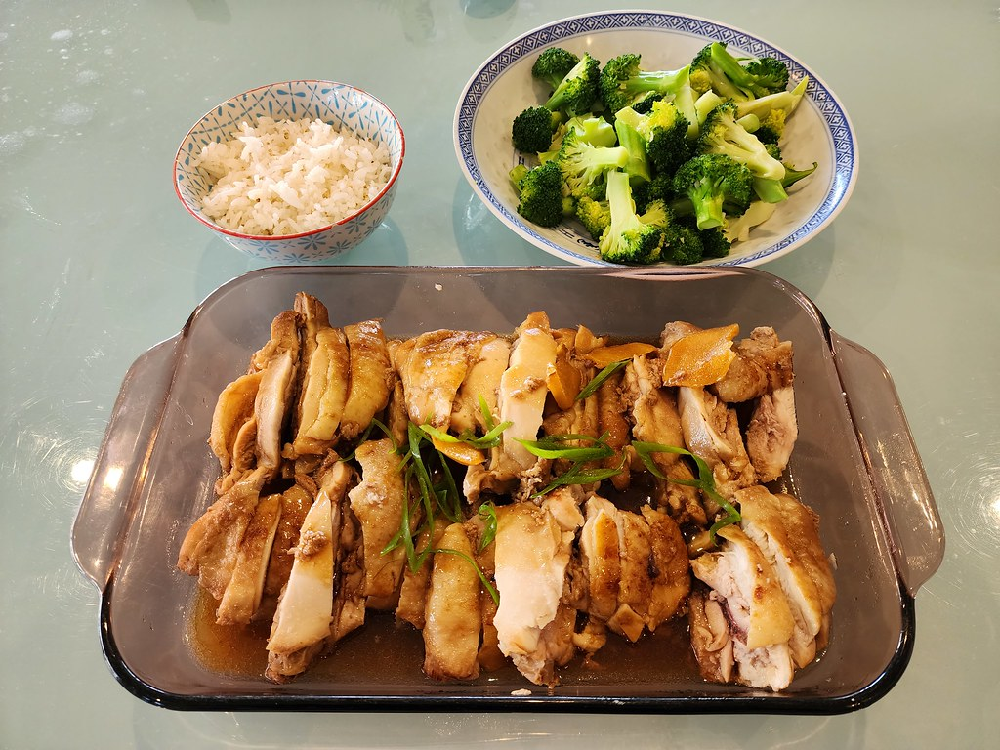

Slow Cooker Teriyaki Chicken

The slow cooker teriyaki chicken is probably one of the easiest meals to put together. The fact that they are cooked by using a crockpot makes this recipe the 'set it and forget it' recipe.
This recipe is packed with flavor and so easy to put together. The ingredients for the meal are most likely ingredients that you already have in the pantry, drawer, cabinet , or wherever you keep your cooking stuff. Without further ado, prepare to be amazed at how simple this meal can be put together.
Ingredients
Serving size = 8 Servings
- 3 lbs. boneless skinless chicken thighs
- 3/4 cup sugar
- 3/4 cup low sodium soy sauce
- 1/3 cup apple cider vinegar
- 1 garlic clove - minced
- 3/4 teaspoon ground ginger
- 1/4 teaspoon pepper
- 4 teaspoon cornstarch
- 4 teaspoons cold water. MUST BE COLD. Fridgid!
Instructions
- Place chicken in a 4 or 5-qt. slow cooker.
- In a small bowl, mix sugar, soy sauce, vinegar, garlic, ginger and pepper; pour over chicken.
- Cover and cook on low for 4-5 hours or until chicken is tender
- Remove chicken to a serving platter; keep warm. Transfer cooking juices to a small saucepan
- Bring cooking juices to a boil.
- In a small bowl, mix cornstarch and cold water until smooth. Stir into cooking juices. Return to a boil; cook and stir 1-2 minutes or until thickened.
- Serve sauce on the side with chicken and rice.
Back to Home